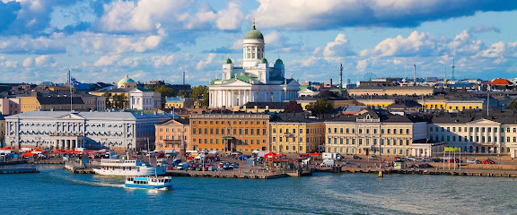
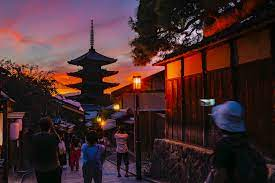
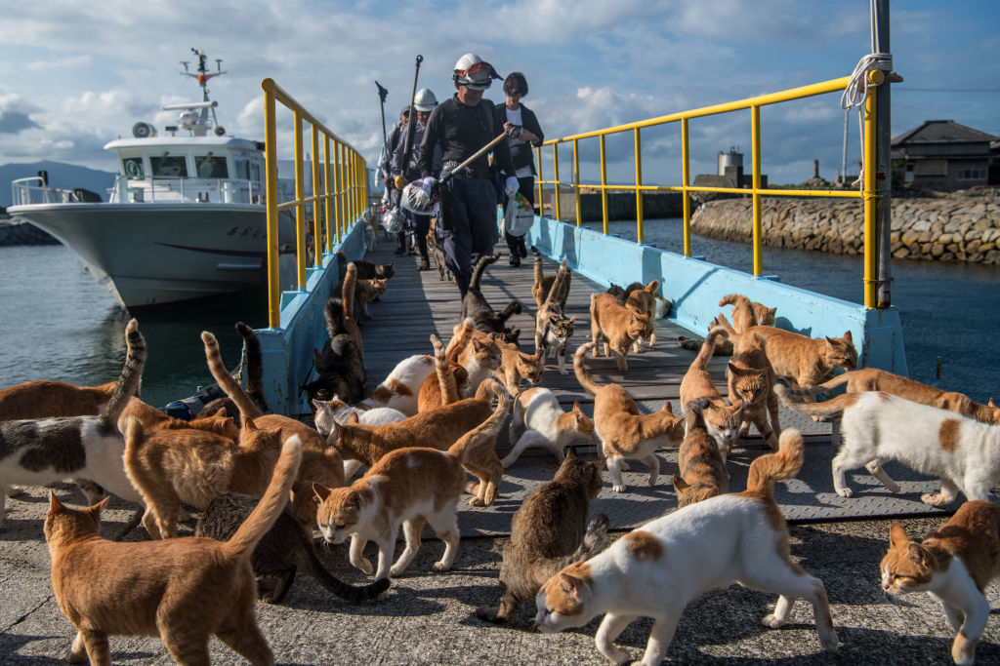
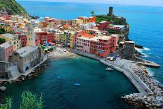

Lista de lugares que gostaria de viajar
Pará Lanches - Brasil
- Motivo: É uma ótima lanchonete para se frequentar
- Foto:
- Localização:
Helsinque - Finlândia
- Motivo: Capital moderna com vida cultural vibrante e excelente design urbano.
- Foto:

- Localização:
Kyoto - Japão
- Motivo: Centro cultural do Japão tradicional com templos como o Fushimi Inari Taisha e florestas de bambu.
- Foto:

- Localização:
Aoshima - Japão
- Motivo: Por ser uma ilha repleta de gatos no Japão
- Foto:

- Localização:
Cinque Terre
- Motivo: Conjunto de vilas pitorescas na Riviera Italiana, em penhascos à beira-mar.
- Foto:

- Localização: